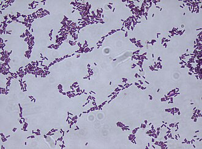
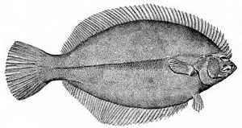

Survive freezing
How this trait became 2 genes to order.
All 37 genes · How the search works · Every trait
1. What this trait needs done
A trait is rarely one thing. Each job below needs its own protein.
| Job | What we search for | Why it is a separate job |
|---|---|---|
| Keep working in the freezing cold | cold shock |
cold makes RNA fold up and stall; these unfold it again |
| Stop ice from tearing the cell apart | antifreeze, ice-binding,
ice structuring |
a completely different defence – it binds ice physically rather than helping chemistry along |
Term source: UniProt keyword search ‘cold’
Term source: UniProt KW-0047 Antifreeze protein
Term source: UniProt KW-0047 Antifreeze protein, synonym ‘Ice structuring protein’
2. What the search returned
| Search term | Proteins found |
|---|---|
cold shock |
42 |
antifreeze |
39 |
ice structuring |
28 |
ice-binding |
7 |
82 different proteins once duplicates are removed.
3. What was thrown out
| Rule it broke | How many |
|---|---|
| comes from a germ that makes people ill | 7 |
| too short to do a job | 5 |
70 survived.
All 12 rejected proteins
| Protein | From | Found by | Rejected because |
|---|---|---|---|
| ATP-dependent RNA helicase DeaD | Mycobacterium tuberculosis | cold shock | comes from a germ that makes people ill |
| Cold shock-like protein CspLA | Listeria monocytogenes ser | cold shock | comes from a germ that makes people ill |
| Cold shock protein CspA | Staphylococcus aureus | cold shock | comes from a germ that makes people ill |
| Cold shock protein CspA | Staphylococcus aureus | cold shock | comes from a germ that makes people ill |
| Probable cold shock protein A | Mycobacterium tuberculosis | cold shock | comes from a germ that makes people ill |
| Probable cold shock protein A | Mycolicibacterium smegmati | cold shock | comes from a germ that makes people ill |
| Retron Se72 cold shock-like protein | Salmonella heidelberg | cold shock | comes from a germ that makes people ill |
| Ice-structuring glycoprotein 8R | Eleginus gracilis | antifreeze, ice structuring | too short to do a job (16 letters, need 40+) |
| Ice-structuring glycoprotein 7R | Eleginus gracilis | antifreeze, ice structuring | too short to do a job (19 letters, need 40+) |
| Ice-structuring protein SS-3 | Myoxocephalus scorpius | antifreeze, ice structuring | too short to do a job (33 letters, need 40+) |
| Ice-structuring protein GS-5 | Myoxocephalus aenaeus | antifreeze, ice structuring | too short to do a job (33 letters, need 40+) |
| Ice-structuring protein 3 | Pseudopleuronectes america | antifreeze, ice structuring | too short to do a job (37 letters, need 40+) |
4. How the winner is picked
From the survivors, one protein per job. Ties break in this order:
- nothing rules it out
- the term it matched sits higher in the job’s list
- not an over-studied lab organism
- better curation score
- shorter, because you pay per letter of DNA
5. The 2 genes to order
Cold shock protein CspB
- Job: Keep working in the freezing cold
- From:

Bacillus subtilis - Size: 67 amino acids → 204 letters of DNA
- UniProt: P32081
Sequences
Protein:
MLEGKVKWFNSEKGFGFIEVEGQDDVFVHFSAIQGEGFKTLEEGQAVSFEIVEGNRGPQAANVTKEADNA to order:
ATGCTCGAAGGTAAGGTCAAGTGGTTCAACTCCGAGAAGGGTTTCGGTTTCATCGAGGTCGAAGGTCAAGATGACGTTTTCGTCCACTTCTCCGCTATCCAAGGTGAGGGTTTCAAGACCTTGGAGGAAGGTCAAGCTGTTTCCTTCGAGATCGTCGAGGGTAATAGAGGTCCTCAGGCTGCTAATGTCACTAAGGAGGCTTAAAntifreeze protein Maxi
- Job: Stop ice from tearing the cell apart
- From:

Pseudopleuronectes americanus - Size: 218 amino acids → 657 letters of DNA
- UniProt: B1P0S1
Sequences
Protein:
MALSLFTVGQFIFLFWTISITEANIDPAARAAAAAAASKAAVTAADAAAAAATIAASAASVAAATAADDAAASIATINAASAAAKSIAAAAAMAAKDTAAAAASAAAAAVASAAKALETINVKAAYAAATTANTAAAAAAATATTAAAAAAAKATIDNAAAAKAAAVATAVSDAAATAATAAAVAAATLEAAAAKAAATAVSAAAAAAAAAIAFAAAPDNA to order:
ATGGCTTTGTCCTTGTTCACCGTCGGTCAATTCATCTTCCTCTTCTGGACCATCTCCATCACCGAAGCTAACATCGACCCTGCTGCTAGAGCTGCTGCTGCTGCTGCTGCTTCTAAAGCTGCTGTTACTGCTGCTGATGCTGCTGCTGCTGCTGCTACTATTGCTGCTTCTGCTGCTTCTGTTGCTGCTGCTACTGCTGCTGATGATGCTGCTGCTTCTATTGCTACTATCAACGCCGCTTCTGCTGCTGCTAAGTCTATCGCCGCTGCTGCTGCTATGGCTGCTAAAGATACTGCTGCTGCTGCTGCTTCTGCTGCTGCTGCTGCTGTTGCTTCTGCTGCTAAAGCTTTAGAAACCATCAACGTCAAGGCCGCCTACGCTGCTGCTACTACTGCTAATACTGCTGCTGCTGCTGCTGCTGCTACTGCTACTACTGCTGCTGCTGCTGCTGCTGCTAAAGCTACTATTGACAACGCTGCTGCTGCTAAAGCTGCTGCTGTCGCTACTGCTGTTTCTGATGCTGCTGCTACTGCTGCTACTGCTGCTGCTGTTGCTGCTGCTACTTTAGAAGCTGCTGCTGCTAAAGCTGCTGCTACTGCTGTTTCCGCTGCTGCTGCTGCTGCTGCTGCTGCTATTGCTTTTGCTGCTGCTCCTTAA6. The 68 we did not order
These passed every rule. Each job takes one protein, so the rest simply were not needed, and every extra gene costs the host energy.
1 of them was ruled out for a different reason, and only that one says why.
See them all
| Protein | From | Length | Found by | Ruled out because |
|---|---|---|---|---|
| Surfactin synthase thioesterase subunit | Bacillus subtilis | 242 | cold shock | only one part of a machine; the other parts are not being ordered |
| 2,3-dihydro-2,3-dihydroxybenzoate dehydrogenase | Bacillus subtilis | 261 | cold shock | |
| ATP-dependent RNA helicase DeaD | Escherichia coli | 629 | cold shock | |
| Antifreeze protein isoform 337 | Choristoneura fumiferana | 108 | antifreeze | |
| Antifreeze protein isoform 501 | Choristoneura fumiferana | 138 | antifreeze | |
| Cold shock domain-containing protein 3 | Arabidopsis thaliana | 301 | cold shock | |
| Cold shock domain-containing protein 4 | Arabidopsis thaliana | 201 | cold shock | |
| Cold shock domain-containing protein C2 | Homo sapiens | 153 | cold shock | |
| Cold shock domain-containing protein C2 | Rattus norvegicus | 154 | cold shock | |
| Cold shock domain-containing protein C2 | Mus musculus | 154 | cold shock | |
| Cold shock domain-containing protein CG9705 | Drosophila melanogaster | 143 | cold shock | |
| Cold shock domain-containing protein E1 | Homo sapiens | 798 | cold shock | |
| Cold shock domain-containing protein E1 | Mus musculus | 798 | cold shock | |
| Cold shock protein 1 | Arabidopsis thaliana | 299 | cold shock | |
| Cold shock protein 2 | Arabidopsis thaliana | 203 | cold shock | |
| Cold shock protein CapB | Pseudomonas fragi | 69 | cold shock | |
| Cold shock protein CspA | Escherichia coli | 70 | cold shock | |
| Cold shock protein CspB | Bacillus caldolyticus | 66 | cold shock | |
| Cold shock protein CspC | Bacillus subtilis | 66 | cold shock | |
| Cold shock protein CspD | Bacillus subtilis | 66 | cold shock | |
| Cold shock-induced protein TIR1 | Saccharomyces cerevisiae | 254 | cold shock | |
| Cold shock-like protein | Thermotoga maritima | 66 | cold shock | |
| Cold shock-like protein 7.0 | Streptomyces clavuligeru | 66 | cold shock | |
| Cold shock-like protein CspB | Escherichia coli | 71 | cold shock | |
| Cold shock-like protein CspC | Escherichia coli | 69 | cold shock | |
| Cold shock-like protein CspC | Escherichia coli | 69 | cold shock | |
| Cold shock-like protein CspD | Escherichia coli | 74 | cold shock | |
| Cold shock-like protein CspD | Bacillus cereus | 66 | cold shock | |
| Cold shock-like protein CspE | Escherichia coli | 69 | cold shock | |
| Cold shock-like protein CspE | Escherichia coli | 69 | cold shock | |
| Cold shock-like protein CspG | Escherichia coli | 70 | cold shock | |
| DNA-binding protein SMUBP-2 | Rattus norvegicus | 988 | antifreeze | |
| Enoyl-[acyl-carrier-protein] reductase [NADH] FabI | Bacillus subtilis | 258 | cold shock | |
| Ice-binding protein | Leucosporidium sp. | 261 | antifreeze, ice-binding | |
| Ice-binding protein | Flavobacterium frigoris | 276 | antifreeze, ice-binding | |
| Ice-binding protein | Colwellia sp | 253 | antifreeze, ice-binding | |
| Ice-binding protein | Nostoc sp. | 269 | ice-binding | |
| Ice-binding protein 1 | Shewanella frigidimarina | 892 | antifreeze, ice-binding | |
| Ice-binding protein K1-A | Typhula ishikariensis | 243 | antifreeze, ice-binding | |
| Ice-binding protein K3-B1 | Typhula ishikariensis | 243 | antifreeze, ice-binding | |
| Ice-structuring protein | Myzopsetta ferruginea | 97 | antifreeze, ice structuring | |
| Ice-structuring protein 2A7 | Pseudopleuronectes ameri | 91 | antifreeze, ice structuring | |
| Ice-structuring protein A | Pseudopleuronectes ameri | 82 | antifreeze, ice structuring | |
| Ice-structuring protein AB1 | Pachycara brachycephalum | 63 | antifreeze, ice structuring | |
| Ice-structuring protein AB2 | Pachycara brachycephalum | 63 | antifreeze, ice structuring | |
| Ice-structuring protein B | Pseudopleuronectes ameri | 82 | antifreeze, ice structuring | |
| Ice-structuring protein GS-8 | Myoxocephalus aenaeus | 40 | antifreeze, ice structuring | |
| Ice-structuring protein LP | Lycodes polaris | 66 | antifreeze, ice structuring | |
| Ice-structuring protein RD1 | Lycodichthys dearborni | 64 | antifreeze, ice structuring | |
| Ice-structuring protein RD2 | Lycodichthys dearborni | 64 | antifreeze, ice structuring | |
| Ice-structuring protein RD3 | Lycodichthys dearborni | 134 | antifreeze, ice structuring | |
| Ice-structuring protein SP1(HPLC 4) | Zoarces americanus | 63 | antifreeze, ice structuring | |
| Ice-structuring protein SP1-C | Zoarces americanus | 87 | antifreeze, ice structuring | |
| Ice-structuring protein SP2(HPLC 1) | Zoarces americanus | 64 | antifreeze, ice structuring | |
| Ice-structuring protein SP2(HPLC 11) | Zoarces americanus | 62 | antifreeze, ice structuring | |
| Ice-structuring protein SP3(HPLC 9) | Zoarces americanus | 64 | antifreeze, ice structuring | |
| Ice-structuring protein SP4(HPLC 7) | Zoarces americanus | 64 | antifreeze, ice structuring | |
| Ice-structuring protein SS-8 | Myoxocephalus scorpius | 45 | antifreeze, ice structuring | |
| Major cold shock protein CspA | Bacillus cereus | 67 | cold shock | |
| Thermal hysteresis protein YL-1 | Tenebrio molitor | 112 | antifreeze | |
| Type-2 ice-structuring protein | Brachyopsis segaliensis | 168 | antifreeze, ice structuring | |
| Type-2 ice-structuring protein | Hemitripterus americanus | 163 | antifreeze, ice structuring | |
| Type-2 ice-structuring protein | Osmerus mordax | 175 | antifreeze, ice structuring | |
| Type-3 ice-structuring protein HPLC 12 | Zoarces americanus | 66 | antifreeze, ice structuring | |
| Type-4 ice-structuring protein LS-12 | Myoxocephalus octodecems | 128 | antifreeze, ice structuring | |
| Y-box-binding protein 3 | Homo sapiens | 372 | cold shock | |
| Y-box-binding protein 3 | Mus musculus | 361 | cold shock | |
| Y-box-binding protein 3 | Rattus norvegicus | 361 | cold shock |